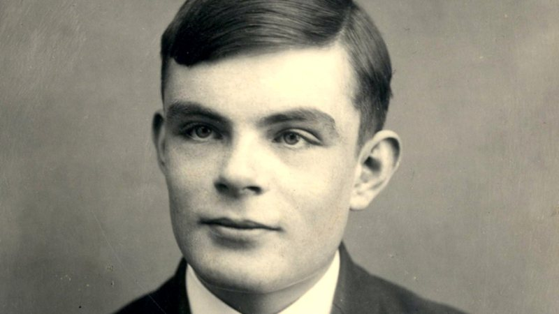

Conquistas de Alan Turing

- 1936 - Máquina de Turing: A Máquina de Turing é um dispositivo teórico conhecido como máquina universal
- 1946 - Nomeado oficial da Ordem do Império Britânico
- 1951 - Eeito membro da Royal Society (FRS).
Alan Mathison Turing (23 de junho de 1912 – 7 de junho de 1954) foi um matemático, cientista da computação, lógico, criptoanalista, filósofo e biólogo teórico britânico. Foi altamente influente no desenvolvimento da ciência da computação teórica, proporcionando uma formalização dos conceitos de algoritmo e computação com a máquina de Turing
Após a guerra Turing trabalhou no Laboratório Nacional de Física, onde projetou um dos primeiros projetos para um computador de programa armazenado.
Você sabe o que é a "Enigma"??